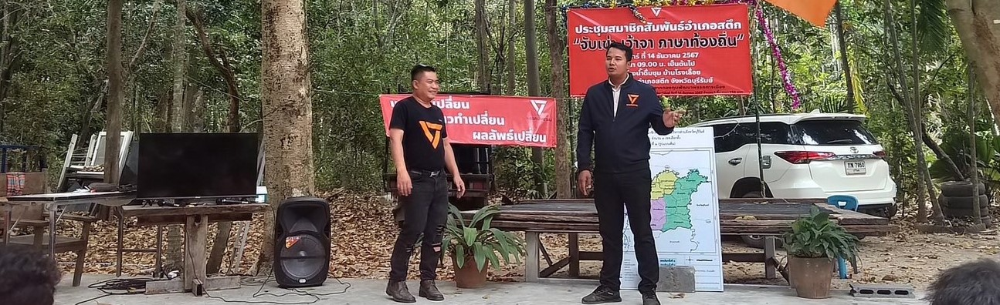

ข้อมูลทั่วไป
|
ข้อมูลการศึกษา
|
ความสามารถพิเศษ
|
คติพจน์ในการทำงาน
รายวิชาการเขียนโปรแกรมบนเว็บ
เราคือผู้คนและการเดินทาง การสร้างการเมืองที่ดี คือการส่งมรดกอันดีงามให้กับคนรุ่นหลัง หลังจากที่เราจากโลกนี้ไปแล้ว
ข้อมูลทั่วไป
ทรงพล ทะรารัมย์
นักศึกษาสาขาเทคโนโลยีดิจิทัลธุรกิจ 66
เป็นผู้ประกอบกิจการ เป็นวิทยากรชุมชน
เป็นแนวร่วมขับเคลื่อนประชาธิปไตยในพื้นที่ที่สามารถพูดคุยและแนวโน้ม
สร้างสัมพันธ์ที่ดีงามในชุมชน
